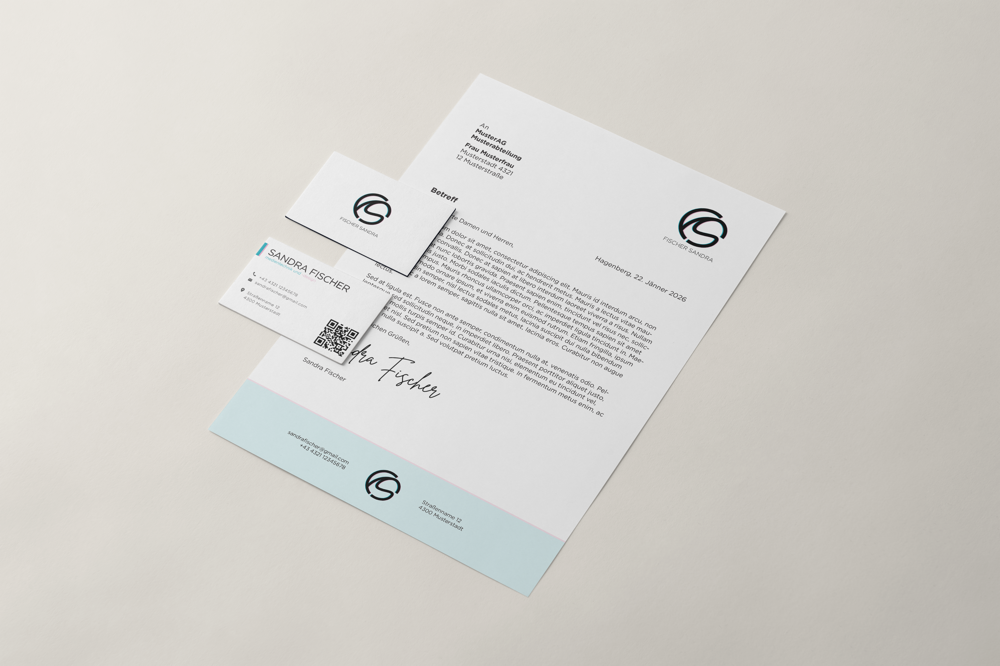

Personal Brand Identity & Broadcast Motion Kit
A holistic personal design system created at FH Hagenberg — uniting a flexible wordmark and monogram across light/dark palettes, tactile print stationery, and a dynamic broadcast motion toolkit.

The Visual Identity & Brandbook
Developed as a core project during my studies, this identity defines my practice at the intersection of technical craft and graphic elegance. The system includes positive and negative variations of the combined wordmark and monogram for versatile use across digital and physical media. An in-depth brand guide documents typography scales, clear space guidelines, color values, and tactile print finishes for letterheads and business cards.
The Broadcast Motion Design Kit
As the final capstone in Motion Design, the static identity was translated into kinetic space. Built in Adobe After Effects, the motion toolkit features an organic logo reveal, modular lower thirds, animated dividers, content inserts, and an atmospheric intro sequence engineered for showreels and video presentations.